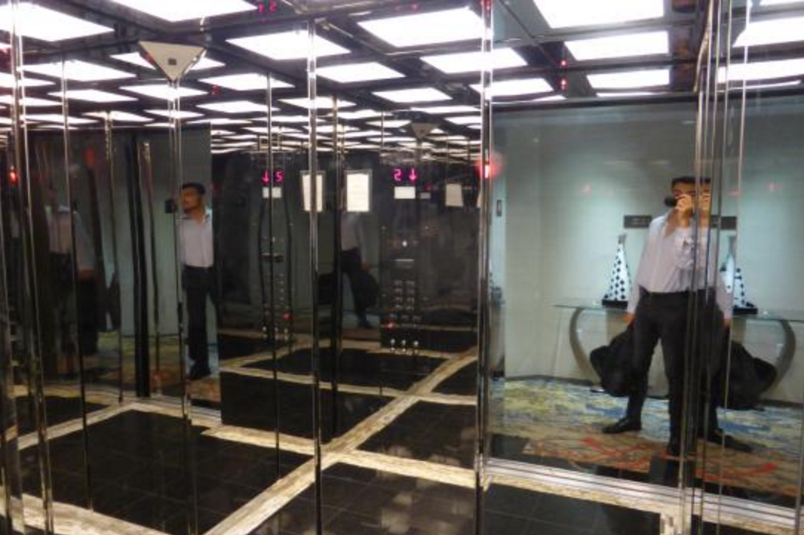

Why distraction is considered as an art in User experience. Let me give you the famous example, what I call "The Mirror Affect". Most lifts are installed with huge mirrors which are used to distract yourself from the long waiting time as being complained by the lift users. There are also other safety reasons, read here.

Distraction should be designed based on understanding the context as well as the users. Mirror is the classic example of one size fits all distraction, since lift is used my a wide range of demographics it would make sense to not use something that cater to just a specific sample size.